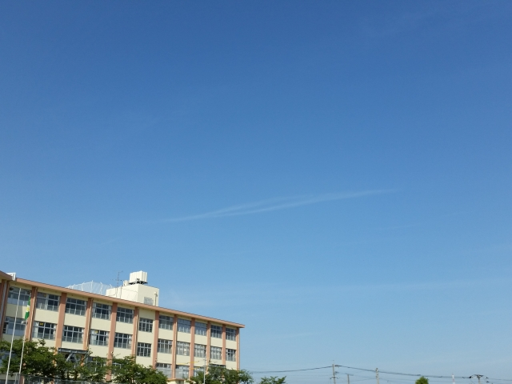
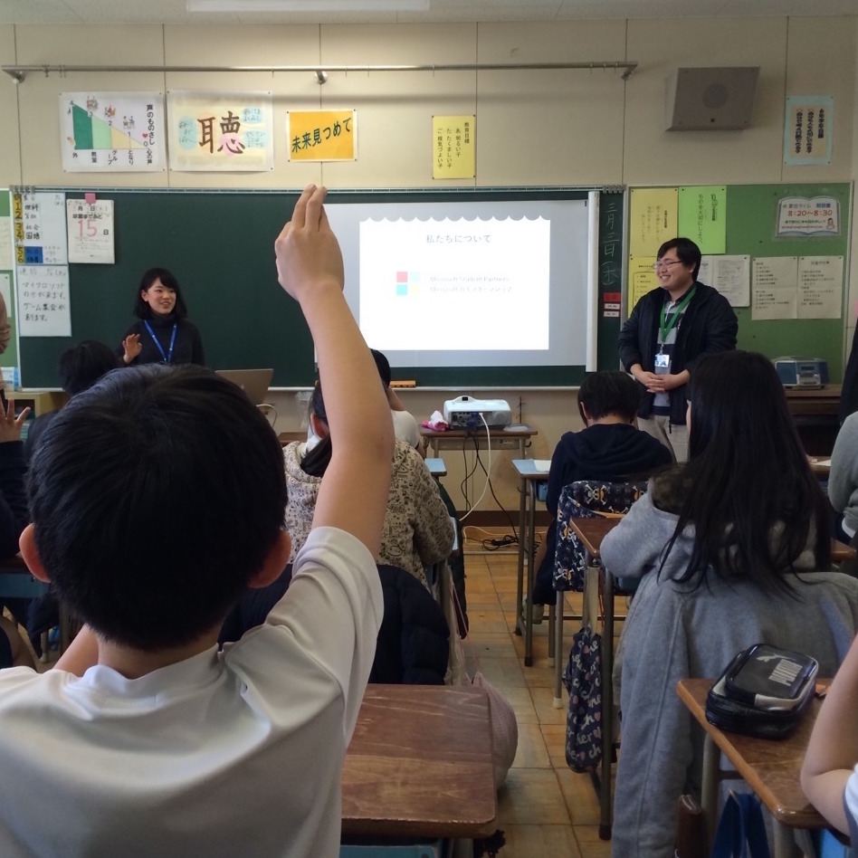

身の回りの算数を探そう！
ABOUT
| 対象 | 小学校 6年生 2クラス |
|---|---|
| メンバー | 4人 |
| 役割 | 代表, 立案, 資料作成, 司会 |
| 開催日 | 2016年3月 |

CONCEPT
数学は、理科や社会と比べて、生活の中のどこに使われているのか、どうやって使うのか、見えにくいです。
私自身、大学生になってから、数学が実は身の回りの様々なものとつながっていることに気づきました。
でも、もっと早く気づいていたら。
これから算数から数学へとステップアップしていく小学生に、
もっと数学の面白さに気付くきっかけを作りたいと思い、
このワークショップを企画・開催しました。
SOLUTION
生徒たち自らで探してもらうため、ドラえもんのひみつ道具の中に使われている算数を見つけるワークショップを開催しました。
見つけた後は班ごとに前で発表をして、クラス全体で共有しました。
全体で共有することで、自分の知らなかったクラスメイトの視点にも、気づいてもらうことができました。



PROCESS
1. 伝えることを決定
ワークショップを通して何を、どうやって伝えるのかを考えました。特に、伝える方法と順番に注意しました。
2. 担当の先生と打ち合わせ
当日生徒が準備するべき物はあるのか、先生のサポートは必要なのか、などを確認しました。事前準備や当日の流れなど、考えが足りていない点に気づくことができました。